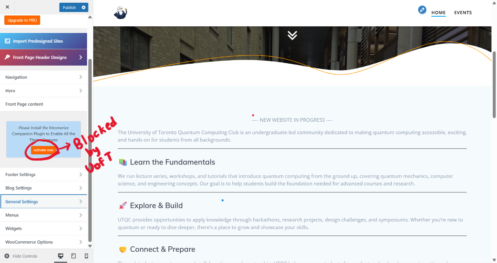
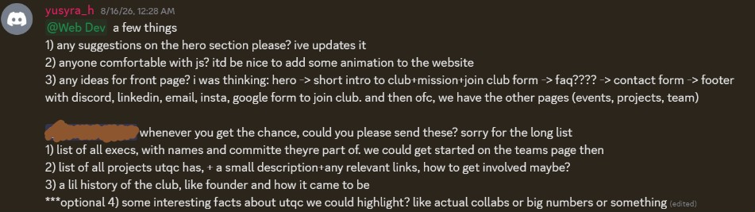
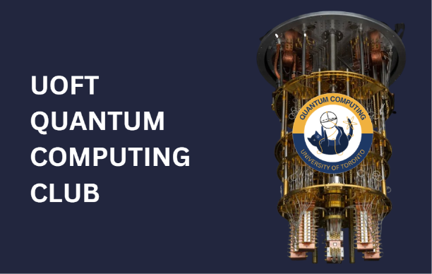
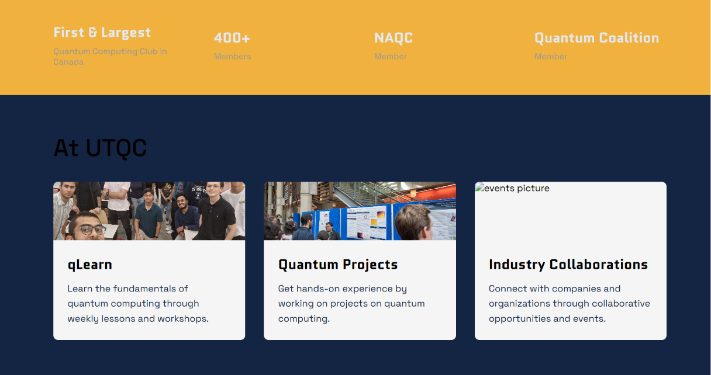

UTQC Website
UTQC WebDeV Team
*****
August 2026
 UTQC Website Homepage
UTQC Website Homepage
Overview
I led the complete redesign and development of the University of Toronto Quantum Computing Club's new
website, working with a team of web developers to build a new site from the ground up.
We moved from the restricted templates and plugins of WordPress to a much
more flexible custom development stack - HTML, CSS, and JS -
giving us a lot more control over the website!
I primarily took lead of the site's UI/UX and frontend development, planning, designing and implementing the core
pages, layouts, and reusable components, while coordinating with UTQC executives for content.
The result is a website that reflects the UTQC like never before! Check it out here.
Origin
It's June 2026, I get a WebDev position at UTQC. At this point, I'm just a member on the team, and the application clearly stated that no coding skills were required. The current website is, and always has been, managed on Wordpress.
 UTQC Prev Website
UTQC Prev Website

Wordpress of Prev WebsiteOur first meeting isn't till late July, so I try to play around with the Wordpress and see if I could give the web a glowup. Unfortunatly (or shall I say, fortunately for me), I see why all the prev generations of UTQC webdevs were never able to put toghether a nice website. It isn't possible, because
1) We didn't have Wordpress Pro, and
2) Almost every thing else that could be customized without Pro was restricted by the UofT domain, presumably for security reasons.
And so a little research later, I realized we could build our own website, while keeping the same domain, as promised by UofT for their Student Groups here.
I also brainstorm a little about how to host the new website and new components to include. Then I bring it up to the team, and Voila, I'm given team lead.
Development
I started things off by doing a little research on what club websites usually include and such.
Then I planned the overall structure of the website and established the typography, layouts, colour scheme(based on logo), and
designed a few reusable design elements that would be repeated throughout the site to keep it cohesive.
We then shared the code on Github and hosted the site on Vercel, with plans to change the URL later. In the meantime, I also
linked the new website from the previous WordPress site so that
visitors who reached the old website could still find the new one. This allowed for a smooth transition.
I tried to split up the implementation fairly, daily messaging the team about open task, and keeping them posted on new updates. Jaden took charge of the JS
side of this project, including API handling (for the Google Calander on events page), and animation. I was in charge of implementing the core pages,
designing the UI with CSS, animating as much as possible with CSS (eg marquee/hover animations), communicating with the execs and getting info, content & feedback. We also held meeting with the president, who would tell us what he wanted in the website and I would adjust and plan accordingly.

One of my daily messagesFor me, I think the longest and hardest part was the UI designing. There were a lot of small decisions involved in making the site feel cohesive yet readable, from choosing fonts and spacing to figuring out how information should be organized and presented. I went through several iterations before settling on the current design. It was also quite a pain making the website responsive across different screen sizes.

Initial Design of Hero Section
Working on ColoursAnd so after a gizzilion iterations, a few code breakdowns due to conflicting changes on Git, and plenty of small design adjustments, we finally had a website that we were happy with. However, the website is still an ongoing project, so we will be continuing to refine the design, add content, and improve its functionality as UTQC grows.
To ensure continuity as well, I documented the website's structure, development setup, and major components in the project's GitHub README. This makes it easier for future UTQC web developers to understand the codebase and continue developing it after our term ends.
Lessons
This project was one of my first experiences leading a real development team.
One of the biggest lessons I learnt is the importance of keeping everyone on the same page.
Because multiple developers were working on different parts of the website, small changes could easily create inconsistencies if they weren't communicated clearly. At one point, conflicting changes even broke the codebase T_T.
From that experience, I learned to inform everyone about implementation decisions early on, clarify things before starting work, and make sure everyone understands how the larger view of the project.
On the front end side, I learnt that building a website
has a lot to do with planning the accessibility and readablitly.
You have to think about about how users
would navigate the site, how information should be organized, how readble the information is, etc. In the end, accessiblity affects most of the design choices.
Most importantly, the project gave me experience leading a team, while still learning too!
But perhaps the most interesting part of this project was how unexpectedly far it took me.
When I first joined UTQC directors team, I was simply a WebDev team member on a position that explicitly said coding experience
wasn't required. I initially just wanted to see if I could improve the existing WordPress site. A few months later, I found myself leading
the development of an entirely new website, making the 'important' decisions, coordinating with executives, working with other developers, and learning how to manage a project as it evolved.
All in all, this project made me realize how much I enjoy designing things. The idea that it's hopefully going to represent UTQC for years to come is so fulfilling too! Maybe I'll take up a career in WebDev?